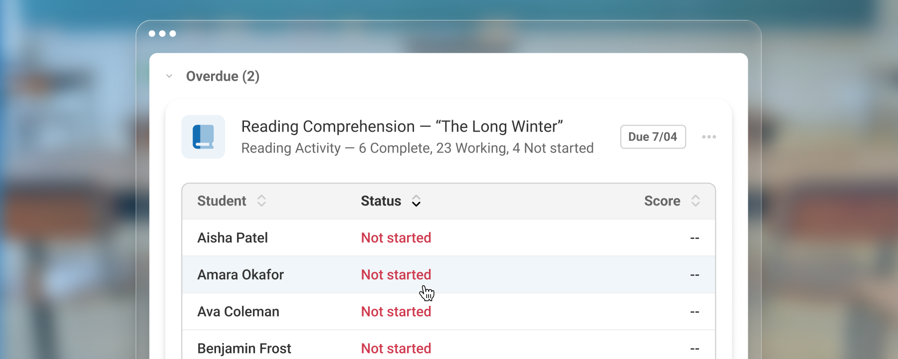
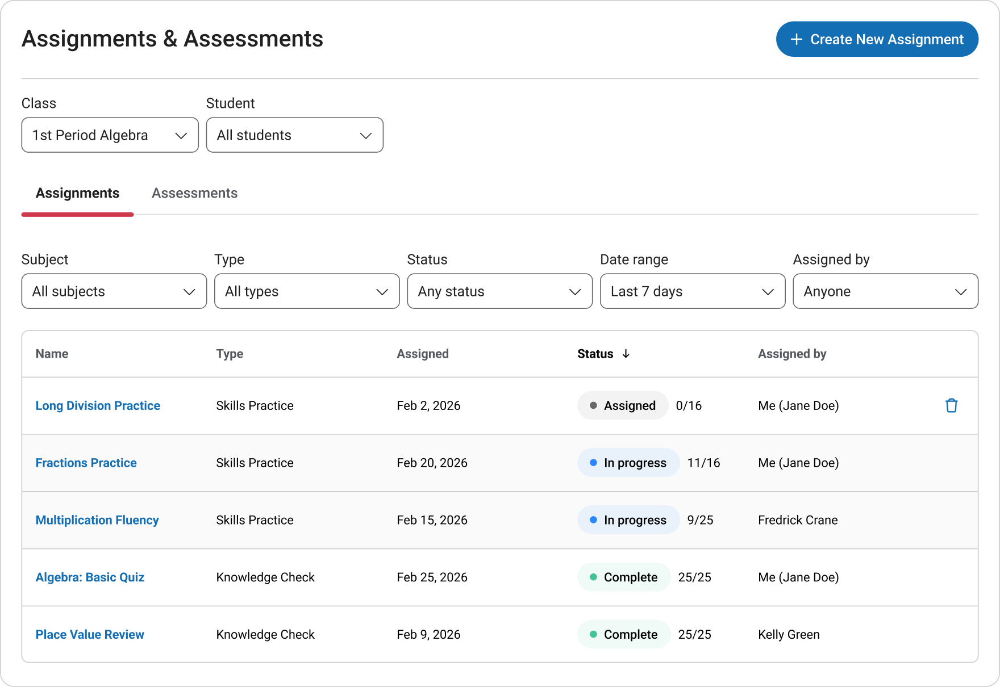
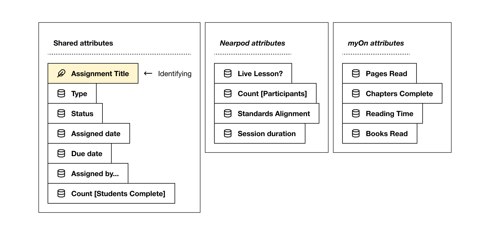

Case study
Teachers could see how many finished, not who hadn’t
My team and I set out to improve a table. What teachers needed was a student name the API didn’t send.
More than 40% of U.S. schools rely on Renaissance for learning data and insights.
- Role
- Senior UX Designer
- Team
- Product manager, product owner, three engineers, and UX research partners
- Timeline
- Four weeks of research and design, followed by two weeks of development
- Outcome
- Met the initiative’s hub-adoption goal. Teachers stayed on the Assignments page instead of opening each product’s report.
- What I owned
- I co-authored the requirements with the product manager and owned the information architecture, interaction patterns, page content, states, prototypes, handoff, and launch planning.
We assumed a better table would be enough
Version 1 of the Assignments page pulled work from several Renaissance products into one table. The team, me included, believed that a table with the right data would give teachers the most flexibility. If they could sort and filter, they could find anything.
Our UX research partners ran moderated sessions with five current Renaissance users and five teachers new to the product suite. Participants reviewed the existing page and two prototypes, looked for specific assignments, and talked through how they would use the page in class.
The flexibility was the problem. Teachers had to sort and filter before they could see who needed help. They ranked urgency by due date, and the table showed when work was assigned. It also showed “11/16” next to Fractions Practice and had no way to say which five.
The API knew how many students finished, not who
Here is the situation we kept coming back to. It is an illustration, not one observed session: a teacher sees that eight of ten students finished an assignment and still can’t see which two didn’t. To find them, the teacher leaves the hub and opens that product’s own report.
No layout could fix that. The initial API returned aggregate completion counts only, so there were no names to show. With engineering and the API owners, I got student IDs added to the payload, along with completion time. With IDs, the page could show student names.
That changed the design question. It stopped being how to display counts and became which assignments and students a teacher should see first.
I replaced the table with a priority view
Once the names existed, I stopped trying to make the table smarter. The final design puts new assignments first, then groups the rest by overdue, due soon, in progress, and done. Teachers can expand or collapse any group, so the flexibility is still there. It just isn’t the first job.
All ten teachers in the study, five current users and five new to the suite, said the grouping matched how they expected to review assignments.

- Version 1: seven menus sit above the table. Teachers filtered before they could act.
- Version 1: a count like 11/16 said how many students finished. It couldn’t say who.
- Version 1 showed when work was assigned. The grouped view leads with when it’s due, which is how teachers ranked urgency.
- Grouped view: overdue work sits near the top, so The Long Winter shows up without a search.
- Grouped view: done stays collapsed, so finished work doesn’t push active work down the page.
Student names sit one click from each assignment
Teachers scan by urgency and open an assignment without leaving the page. The Long Winter is open below, sorted so students who haven’t started come first.
Interactive reconstruction of the final design. Student names and results are illustrative.
Open an overdue assignment to see who hasn’t started.
New assignments (1)
Skill Practice: Symmetry & TransformationsDue 9/27
| Benjamin Frost | Completed in 24m | 9 / 12 (75%) |
|---|---|---|
| Caleb Nguyen | Not started | — |
| Diego Fuentes | Not started | — |
| Elena Voss | In progress | 3 / 12 (25%) |
| Fatima Khan | In progress | 5 / 12 (42%) |
| Gabriel Ortiz | In progress | 7 / 12 (58%) |
| Harper Lee | In progress | 3 / 12 (25%) |
Overdue (2)
Reading Activity: The Long Winter, Chapter 4Due 9/17
| Diego Fuentes | In progress | 19 of 32 pages |
|---|---|---|
| Elena Voss | Completed in 17m | 29 of 32 pages |
| Fatima Khan | Completed in 20m | 31 of 32 pages |
| Gabriel Ortiz | Completed in 23m | 29 of 32 pages |
| Harper Lee | Not started | — |
| Isaac Moreno | Not started | — |
| Jasmine Kim | Not started | — |
Math Challenge: Area & PerimeterDue 9/19
| Fatima Khan | Completed in 16m | 7 / 10 (70%) |
|---|---|---|
| Gabriel Ortiz | Completed in 19m | 9 / 10 (90%) |
| Harper Lee | Not started | — |
| Isaac Moreno | Not started | — |
| Jasmine Kim | Not started | — |
| Aisha Patel | In progress | 3 / 10 (30%) |
| Amara Okafor | In progress | 4 / 10 (40%) |
Due soon (3)
Skill Practice: Equivalent FractionsDue 9/22
| Isaac Moreno | In progress | 5 / 12 (42%) |
|---|---|---|
| Jasmine Kim | In progress | 7 / 12 (58%) |
| Aisha Patel | In progress | 3 / 12 (25%) |
| Amara Okafor | Completed in 14m | 12 / 12 (100%) |
| Ava Coleman | Completed in 17m | 10 / 12 (83%) |
| Benjamin Frost | Completed in 20m | 12 / 12 (100%) |
| Caleb Nguyen | Not started | — |
Reading Activity: The One and Only Ivan, Chapter 6Due 9/23
| Jasmine Kim | In progress | 19 of 32 pages |
|---|---|---|
| Aisha Patel | Completed in 23m | 31 of 32 pages |
| Amara Okafor | Completed in 12m | 29 of 32 pages |
| Ava Coleman | Completed in 15m | 31 of 32 pages |
| Benjamin Frost | Completed in 18m | 29 of 32 pages |
| Caleb Nguyen | Not started | — |
| Diego Fuentes | In progress | 19 of 32 pages |
Math Challenge: Ratios & ProportionsDue 9/24
| Aisha Patel | In progress | 3 / 10 (30%) |
|---|---|---|
| Amara Okafor | In progress | 4 / 10 (40%) |
| Ava Coleman | Completed in 13m | 10 / 10 (100%) |
| Benjamin Frost | Completed in 16m | 8 / 10 (80%) |
| Caleb Nguyen | Not started | — |
| Diego Fuentes | Not started | — |
| Elena Voss | In progress | 3 / 10 (30%) |
In progress (5)
Skill Practice: Adding IntegersDue 9/15
| Benjamin Frost | In progress | 3 / 12 (25%) |
|---|---|---|
| Caleb Nguyen | In progress | 5 / 12 (42%) |
| Diego Fuentes | Completed in 18m | 9 / 12 (75%) |
| Elena Voss | Completed in 21m | 11 / 12 (92%) |
| Fatima Khan | Completed in 24m | 9 / 12 (75%) |
| Gabriel Ortiz | Completed in 13m | 11 / 12 (92%) |
| Harper Lee | Not started | — |
Math Challenge: Algebraic ExpressionsDue 9/16
| Caleb Nguyen | In progress | 4 / 10 (40%) |
|---|---|---|
| Diego Fuentes | Completed in 16m | 8 / 10 (80%) |
| Elena Voss | Completed in 19m | 10 / 10 (100%) |
| Fatima Khan | Completed in 22m | 8 / 10 (80%) |
| Gabriel Ortiz | Completed in 11m | 10 / 10 (100%) |
| Harper Lee | Not started | — |
| Isaac Moreno | In progress | 4 / 10 (40%) |
Skill Practice: Word RelationshipsDue 9/16
| Caleb Nguyen | In progress | 5 / 12 (42%) |
|---|---|---|
| Diego Fuentes | Completed in 16m | 10 / 12 (83%) |
| Elena Voss | Completed in 19m | 12 / 12 (100%) |
| Fatima Khan | Completed in 22m | 10 / 12 (83%) |
| Gabriel Ortiz | Completed in 11m | 12 / 12 (100%) |
| Harper Lee | Not started | — |
| Isaac Moreno | In progress | 5 / 12 (42%) |
Reading Activity: Bud, Not Buddy, Chapter 8Due 9/17
| Diego Fuentes | In progress | 19 of 32 pages |
|---|---|---|
| Elena Voss | Completed in 17m | 29 of 32 pages |
| Fatima Khan | Completed in 20m | 31 of 32 pages |
| Gabriel Ortiz | Completed in 23m | 29 of 32 pages |
| Harper Lee | Not started | — |
| Isaac Moreno | In progress | 14 of 32 pages |
| Jasmine Kim | In progress | 19 of 32 pages |
Math Challenge: Decimal OperationsDue 9/18
| Elena Voss | Completed in 15m | 8 / 10 (80%) |
|---|---|---|
| Fatima Khan | Completed in 18m | 10 / 10 (100%) |
| Gabriel Ortiz | Completed in 21m | 8 / 10 (80%) |
| Harper Lee | Not started | — |
| Isaac Moreno | In progress | 4 / 10 (40%) |
| Jasmine Kim | In progress | 6 / 10 (60%) |
| Aisha Patel | In progress | 3 / 10 (30%) |
Done (3)
Skill Practice: Vocabulary ReviewDue 9/16
| Caleb Nguyen | Completed in 13m | 12 / 12 (100%) |
|---|---|---|
| Diego Fuentes | Completed in 16m | 10 / 12 (83%) |
| Elena Voss | Completed in 19m | 12 / 12 (100%) |
| Fatima Khan | Completed in 22m | 10 / 12 (83%) |
| Gabriel Ortiz | Completed in 11m | 12 / 12 (100%) |
| Harper Lee | Completed in 14m | 10 / 12 (83%) |
| Isaac Moreno | Completed in 17m | 12 / 12 (100%) |
Math Challenge: VolumeDue 9/15
| Benjamin Frost | Completed in 12m | 7 / 10 (70%) |
|---|---|---|
| Caleb Nguyen | Completed in 15m | 9 / 10 (90%) |
| Diego Fuentes | Completed in 18m | 7 / 10 (70%) |
| Elena Voss | Completed in 21m | 9 / 10 (90%) |
| Fatima Khan | Completed in 24m | 7 / 10 (70%) |
| Gabriel Ortiz | Completed in 13m | 9 / 10 (90%) |
| Harper Lee | Completed in 16m | 7 / 10 (70%) |
Reading Activity: The Giver, Chapter 1Due 9/14
| Ava Coleman | In progress | 19 of 32 pages |
|---|---|---|
| Benjamin Frost | Completed in 14m | 32 of 32 pages |
| Caleb Nguyen | Completed in 17m | 30 of 32 pages |
| Diego Fuentes | Completed in 20m | 32 of 32 pages |
| Elena Voss | Completed in 23m | 30 of 32 pages |
| Fatima Khan | Completed in 12m | 32 of 32 pages |
| Gabriel Ortiz | Completed in 15m | 30 of 32 pages |
Making it buildable inside the product we had
Each practice and assessment product stored assignments its own way. I facilitated an object-modeling workshop with product and engineering to define one shared assignment object. Every assignment has a title, type, assigned date, and due date. Product-specific detail, such as questions answered or pages read, sits alongside. The interface shows the shared fields first and keeps product context in labels and icons.
The page ran as a React app inside an iframe in an Angular shell, which limited layout, filters, dialogs, and other interactions. Along with the student IDs, we requested timeframe pre-filtering from the API so loading student-level data wouldn’t slow the page.
I ran the working sessions with Design Dash, the object-modeling and prototyping toolset I built. AI-assisted prototypes with realistic mock data let product, research, and engineering compare options in the room and leave with decisions and open questions written down.
We deferred a fuller student-performance summary. Teachers wanted it, but it would have delayed the core fix: showing which assignments and students needed attention.

Outcome
Teachers stayed on one page instead of opening each product’s report
Version 2 launched after four weeks of research and design and two weeks of development. It met the initiative’s goal of moving teachers from individual products into Renaissance Intelligence. Product behavior data showed fewer trips from the Assignments page out to individual product reports, which fits teachers finding the students they needed without leaving.
My takeaway: an opinionated default earns its place when it matches how people already rank their work, and it goes wrong fast when it doesn’t. That’s why we tested before we built, and why every group still opens and closes.